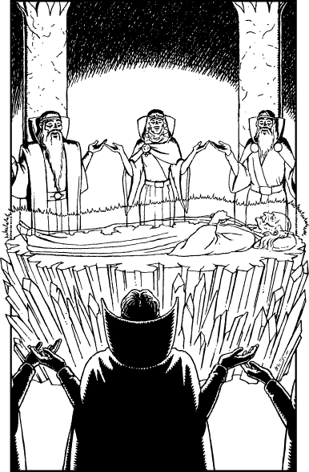

225
You hurry with Lord Rimoah through the corridors of the Tower of Truth towards the sound of the tolling bell, until at last you arrive at a chamber located below its vaulted presidium. Gathered here are the members of the High Council. They stand in a circle around the cloaked body of Lord Casis which lies upon a bed of shimmering crystals. A cocoon of light encases his frail form, its pale luminescence shedding an uncanny glow upon the faces of the surrounding elders. Rimoah joins them and, as you observe this eerie scene, you recall Lone Wolf’s teachings at the Kai Monastery.

The Elder Magi are all that remain of the race of beings from whom all goodly magic stems. They were sent to Magnamund almost 10,000 years ago by the Gods Kai and Ishir to defeat Agarash the Damned, Naar’s first champion, and they triumphed in their task. Yet, in a later age their numbers were decimated by a plague and the few thousands who survived this tragedy sought refuge here in Dessi. The Elder Magi have always aided Sommerlund and have been loyal and invaluable allies to the Kai. But now their ancient power is waning, and the few thousands who survived the Great Plague now number less than a hundred.
Suddenly the bell ceases to toll and you watch in awe as the fragile remains of Lord Casis gradually fade from sight. He has ended his time here upon Magnamund and has passed over into the Plane of Light, the ethereal domain of the Gods Kai and Ishir. Silently the remaining elders file out of the chamber. As Lord Rimoah passes, he beckons you to follow him.
‘You are the first Kai who has ever witnessed the ascension of an Elder,’ he says, as he takes you back to your room. ‘Alas, our power ebbs with each passing year, for this is the twilight of our existence here on Magnamund. Yet, we embrace our fate, for even as we weaken and fade so the power of the New Order Kai grows stronger. This is the dawning of your Age, Grand Master. You and your brothers shall carry forward the fight against Naar, and you shall be victorious.’